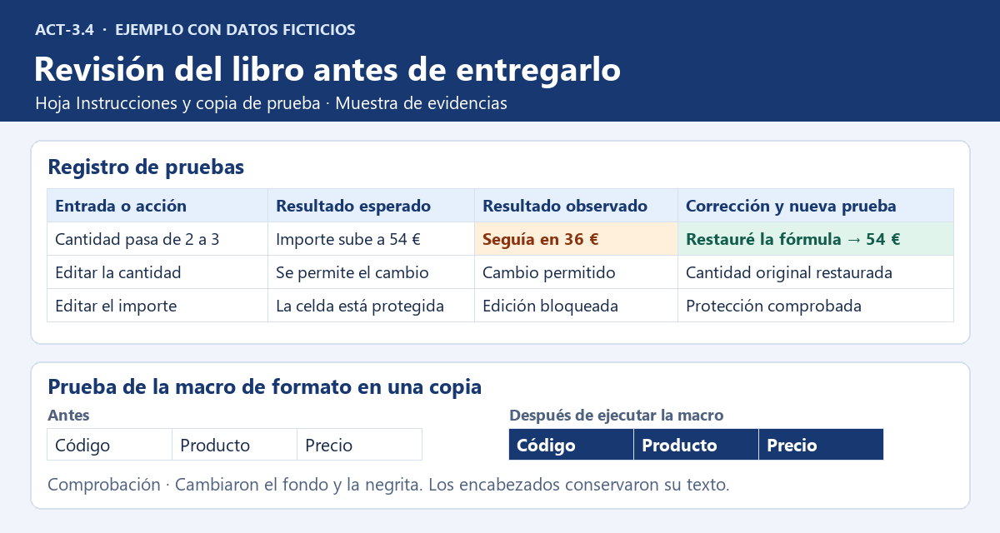

ACT-3.4 · Lo probamos antes de entregarlo
Duración: 6 horas, incluyendo explicación y práctica. RA3. Evidencia individual y posterior integración por parejas.
Encargo
Una persona distinta debe poder utilizar tu libro. Primero revisas tu trabajo individual y después integras con tu pareja la versión de empresa.
Antes de empezar
Consulta los datos comunes y la teoría correspondiente. No necesitas inventar una empresa nueva ni pagar ninguna herramienta. Se admite Calc o Excel en el entorno acordado por el profesor.
Cómo aprender el procedimiento
Revisión y protección con un fallo simulado. El taller de macro de esta actividad desarrolla preparación, grabación, ejecución y reapertura.
Ejemplo visual

Fíjate en cómo se registra el fallo y qué ocurrió al repetir la prueba tras corregirlo. En la copia de prueba, la macro cambia el aspecto de la cabecera. Usa tus propias pruebas y separa la evidencia individual de la entrega de PROY-3.
Trabajo paso a paso
- Guarda una copia y ejecuta las pruebas comunes de la rúbrica.
- Corrige al menos un fallo detectado; si no encuentras ninguno, el docente introducirá uno en una copia.
- Distingue entradas y fórmulas, protege una hoja y comprueba ambos tipos de celdas.
- Graba la macro mínima de formato en una copia, con ayuda y en el entorno que indique el profesor. Conserva el formato que permite ejecutarla.
- Introduce un código mediante teclado y añade una imagen propia de producto, indicando cómo se capturó. Prueba el lector si está disponible.
- Completa Instrucciones: aplicación, entradas, actualización, impresión y limitaciones.
- Realiza el control individual de 40 minutos.
- Compara con tu pareja las soluciones de las tres actividades y elegid una base justificada.
- Integrad PROY-3 y actualizad decisiones, versiones y contribuciones.
- Cada integrante explica una fórmula y realiza un cambio distinto en directo.
Taller guiado · Grabar y probar FormatoCabecera
Reserva unos 30–40 minutos del primer tramo de 2 h para la demostración y repetición individual. No añade horas a ACT-3.4. Sigue solo la ruta de la aplicación acordada con el profesor.
A. Prepara una copia que puedas recuperar
- Abre tu libro individual y guarda primero los cambios de revisión.
- Usa Guardar como para crear
ACT-3.4_Apellido_Nombre_Macro.odsen Calc oACT-3.4_Apellido_Nombre_Macro.xlsmen Excel de escritorio. Comprueba el tipo de archivo, no solo el texto del nombre. - Añade una hoja llamada
PruebaMacro, sin protección. Introduce A1 = Código, B1 = Producto y C1 = Stock. Repite los títulos en A4:C4. Déjalos sin negrita y con fondo sin relleno. - Anota la acción prevista: «Aplicar negrita y fondo azul claro a una cabecera, sin cambiar sus textos ni los datos del libro». Guarda la copia.
B. Ruta principal · LibreOffice Calc en Windows
- Si falta la grabadora, el profesor comprobará Herramientas → Opciones → LibreOffice → Avanzadas → Activar grabación de macros (limitada). Acepta y reinicia solo si la aplicación lo solicita. Activar la grabadora no equivale a permitir todas las macros.
- En PruebaMacro selecciona A1:C1 antes de grabar. Puedes escribir
A1:C1en el cuadro de nombre, a la izquierda de la barra de fórmulas, y pulsar Enter. - Abre Herramientas → Macros → Grabar macro. Debe aparecer el control Finalizar grabación.
- Aplica negrita con el botón de formato y elige un fondo azul claro legible. No escribas títulos nuevos, no cambies de hoja y no añadas otras acciones durante la grabación.
- Pulsa Finalizar grabación. En el diálogo de guardado elige el nombre de tu documento abierto, no Mis macros. Dentro del documento usa la biblioteca Standard y un módulo, por ejemplo Module1; si no existen, créalos mediante los controles de biblioteca/módulo nuevos.
- Asigna el nombre
FormatoCabecera, sin espacios, y guarda la macro. Guarda también el documento con Ctrl+S y conserva el formato ODS. - Fuera de la grabación, quita la negrita y el fondo de A1:C1. Comprueba que se ven como al inicio. Selecciona ese rango.
- Usa Herramientas → Macros → Ejecutar macro, despliega tu documento y su biblioteca/módulo, elige FormatoCabecera y ejecútala. Deben reaparecer los formatos sin que los apliques manualmente.
- Selecciona A4:C4 y vuelve a ejecutar. Observa si actúa en la selección o vuelve al rango anterior; registra lo que realmente sucede.
Consulta la ayuda oficial de grabación y la guía de macros de Calc. Los nombres y la disposición de los controles pueden variar entre versiones; el docente comprobará la ruta del aula.
C. Alternativa · Excel de escritorio en Windows
- Si no ves Programador/Desarrollador, ve a Archivo → Opciones → Personalizar cinta de opciones y activa esa pestaña.
- Selecciona A1:C1 en PruebaMacro antes de empezar. En Programador → Grabar macro, escribe
FormatoCabecera, selecciona Guardar macro en: Este libro y deja vacío el atajo de teclado. Acepta. - Aplica negrita y fondo azul claro. Pulsa Programador → Detener grabación y guarda como Libro de Excel habilitado para macros (*.xlsm). Guardar como XLSX eliminaría la macro de esa copia.
- Fuera de la grabación, devuelve A1:C1 a sin negrita y sin relleno. Selecciona el rango y entra en Programador → Macros → FormatoCabecera → Ejecutar. Comprueba que reaparece el formato.
- Repite la ejecución con A4:C4 seleccionado. Anota dónde actúa realmente. No necesitas configurar referencias relativas ni editar código para esta práctica.
Consulta cómo mostrar Programador, la grabadora de Excel y cómo conservar el formato del libro. Excel en el navegador no ofrece esta grabadora de VBA; utiliza el puesto compatible que indique el profesor.
D. Comprueba que la macro viaja con tu entrega
- Guarda y cierra la copia. Abre de nuevo ese archivo desde su carpeta, no otro libro con un nombre parecido.
- Si la ejecución está bloqueada, informa al docente. No cambies la seguridad general a «permitir todas las macros».
- Comprueba en el selector que FormatoCabecera está dentro del documento. Con la autorización y configuración del aula, repite la prueba sobre la cabecera sin formato. Si es posible, el docente comprobará el archivo en otro perfil o puesto compatible: encontrarla solo en tu ordenador no prueba que viaje con el documento.
- Guarda el registro en Instrucciones. La macro debe conservar Código, Producto y Stock y no modificar cantidades ni fórmulas de las hojas de gestión.
| Prueba | Qué anotar tú |
|---|---|
| Aplicación y archivo | [Aplicación/versión, nombre y extensión] |
| Ubicación de la macro | [Documento, biblioteca/módulo si procede y nombre] |
| Rango original A1:C1 | [Aspecto inicial, ejecución y aspecto observado] |
| Segunda selección A4:C4 | [Qué rango cambió realmente y limitación detectada] |
| Reapertura | [Se encuentra dentro del documento y resultado al repetir, o bloqueo pendiente] |
Incluye una captura propia antes y otra después, acompañadas de este registro; conserva el editable con la macro. Las imágenes son apoyo, no sustituyen su ejecución. Si actúa sobre posiciones fijas o conmuta la negrita al ejecutarla dos veces seguidas, indícalo: restaura la cabecera al estado inicial antes de repetir. No prometas que puede aplicarse sobre cualquier rango.
E. Si algo no funciona
| Problema | Comprobación siguiente |
|---|---|
| No aparece Grabar macro | Comprobar aplicación de escritorio, opciones y permisos con el docente |
| La macro no aparece al reabrir | Revisar que se guardó dentro del documento y en ODS/XLSM; guardarla en el perfil o en XLSX no sirve para esta entrega |
| Cambia otra zona | Revisar las selecciones registradas y documentar el alcance; repetir la grabación breve si incluyó pasos ajenos |
| No se puede aplicar formato | Comprobar que PruebaMacro está sin proteger |
| No se permite ejecutar | Registrar el bloqueo y solicitar la comprobación docente, sin dar la prueba por superada |
Para PROY-3, cread la copia con macro a partir del libro común final y repetid esta grabación breve allí. Copiar una pestaña de un libro individual no garantiza copiar la macro. Conservad las evidencias individuales; la pareja registra además la prueba realizada en su archivo común.
Entrega
ACT-3.4_Apellido_Nombre: libro individual revisado y copia ACT-3.4_Apellido_Nombre_Macro.ods o .xlsm, con el registro de automatización en Instrucciones y capturas antes/después. Si hay un bloqueo de entorno, indica la evidencia pendiente. PROY-3_EquipoXX conserva su propia entrega común de libro, PDF, CSV, copia con macro y memoria v3 según el enunciado del proyecto. Son evidencias distintas.
Utiliza ODS en Calc, XLSX en Excel sin macros y XLSM para la copia con macros de Excel. No entregues solo capturas.
Organización del tiempo
2 h de auditoría y demostración de automatización; 2 h de control individual (40 min) e integración; 2 h de cierre, pruebas y defensas breves. Organizar las defensas durante el trabajo autónomo.
Ayuda y ampliación
Apoyo: lista de comprobación y macro realizada paso a paso. La ampliación es mejorar las instrucciones; no se pide programar VBA, Basic ni crear botones.
Antes de entregar
Abre de nuevo el archivo, cambia una entrada y verifica el resultado. El nombre de empresa debe coincidir con UD02. Consulta la rúbrica común; las ampliaciones no sustituyen los requisitos básicos.